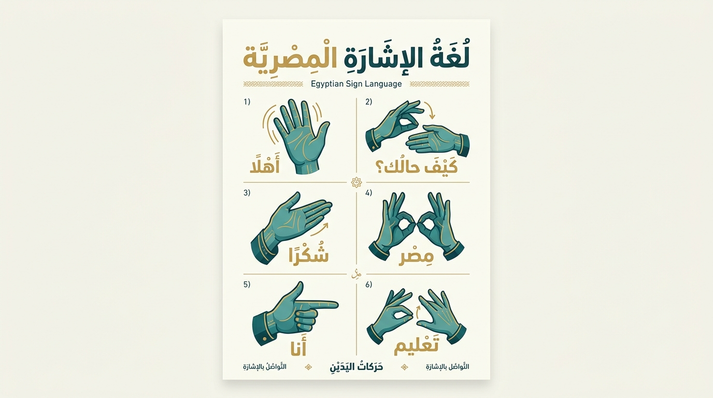

توثيق معتمد وفقاً للأبحاث اللغوية لمجتمع الصم المصري
تعلّم لغة الإشارة المصرية الأصيلة بدقة علمية
دليلك التفاعلي الشامل للأبجدية الإشارية، النظام العددي، القواعد التركيبية (Topic-Comment)، وآداب التعامل مع مجتمع الصم في مصر دون تداخل مع اللغات الإشارية الأخرى.
جاري تحميل إشارة اليوم الموثقة...
31
حرفاً وهجاءً إشارياً أصيلاً
4 مستويات
للنظام العددي (الآحاد للآلاف)
Topic-Comment
قواعد بناء الجملة والزمن
100% موثقة
خالية تماماً من ASL أو ArSL
📚 تصنيفات المعجم الإشاري
تصفح الإشارات الأساسية مقسمة ومصنفة بحسب المواقف والموضوعات الحياتية اليومية.
ثوابت لغوية صارمة
لماذا لغة الإشارة المصرية (ESL) لغة مستقلة بذاتها؟
لغة الإشارة المصرية ليست ترجمة حرفية للعربية المنطوقة، بل لغة قائمة بذاتها تمتلك صرفها ونحوها وقواعدها الفونولوجية الخاصة. يراعي معجم "إشارة" أشكال الأصابع، الاتجاهات نحو الصدر أو المتلقي، وعدد الأصابع الدال على نقاط الحروف بدقة متناهية.
توافق لغوي كامل
توجيه دقيق للراحة
اكتشف قواعد النحو والإشارة ←

الملصق التوثيقي المعتمد لحركات اليدين في لغة الإشارة المصرية (ESL)